Borrador académico en Markdown — versión para revisión, 22 de octubre de 2026
Este documento es la fuente de contenido para preparar el informe final en Microsoft Word. La evidencia descrita procede de una aplicación didáctica local con datos sintéticos; no representa una plataforma financiera de producción.
Universidad Amazónica de Pando
Maestría en Big Data y Analítica de Datos
Módulo 10: Diseño de Arquitecturas para Sistemas de Big
Data
Informe aplicado
Autor: Ruben Cabrera
Docente: MSc. Ing. Marcelo Fernando Condori
Mendoza
Fecha: 22 de octubre de 2026
Este trabajo documenta la ejecución, revisión y mejora de un proyecto académico que representa un sistema de monitoreo de transacciones financieras mediante componentes y conceptos de Big Data. La aplicación genera transacciones sintéticas y presenta cinco áreas: procesamiento por lotes y capas Bronze/Silver/Gold; comparación conceptual entre batch y streaming; tolerancia a fallos mediante Circuit Breaker; simulación de recuperación ante desastres; y estrategias de sharding y replicación.
La versión local se ejecutó con Python 3.12.3 en Linux, dentro de un entorno virtual. Se instaló el conjunto base de dependencias, se ejecutó la demo completa, se abrió el dashboard Streamlit y se ejecutaron módulos individuales. La revisión inicial permitió detectar fallos y resultados inconsistentes. Se corrigió una latencia negativa en la simulación de replicación, se cambió la clave usada para distribuir transacciones entre shards y se modificó la replicación del simulador DRP para copiar todos los registros pendientes. También se reemplazó una llamada de fecha UTC obsoleta y se documentó la forma correcta de invocar el módulo DRP.
En una corrida de sharding con 500 transacciones, la distribución inicial dejó un shard vacío; después del cambio, los tres shards recibieron 155, 169 y 176 registros, con un balance calculado de 88,1 %. En el simulacro DRP de 200 transacciones, la línea base reportó 100 recuperadas y 100 posiblemente perdidas; tras la mejora se reportaron 200 recuperadas, cero perdidas y cero brechas. El ETL de una corrida recibió 500 registros, conservó 499 en Silver y rechazó uno. Estas cifras son resultados de simulación local y pueden cambiar entre ejecuciones.
El proyecto demuestra flujos didácticos, pero no ejecuta en esta evidencia un clúster real distribuido, almacenamiento Delta, replicación entre regiones ni servicios externos de monitoreo. El informe distingue por ello la arquitectura conceptual del comportamiento realmente ejecutado.
Palabras clave: Big Data, arquitectura Lambda, ETL, lakehouse, sharding, replicación, Circuit Breaker, DRP, RTO, RPO.
Al maquetar en Word, generar el índice automáticamente a partir de los estilos de encabezado. El orden de este borrador es:
Las organizaciones que procesan pagos, transferencias y otras operaciones financieras necesitan registrar grandes cantidades de eventos y analizarlos con oportunidad. Además del volumen, importa la velocidad de llegada, la variedad de campos, la calidad de los datos y la utilidad de los resultados para la toma de decisiones. Un sistema de monitoreo puede combinar la conservación de eventos, la validación de registros, la generación de indicadores y mecanismos que eviten que un fallo temporal de un servicio se propague al resto de la aplicación.
El proyecto objeto de este informe presenta ese escenario mediante datos sintéticos. Incluye un generador de transacciones, módulos Python para procesar lotes y simular componentes de resiliencia, una interfaz Streamlit, un DAG de Apache Airflow y una configuración Docker para servicios como Kafka, PostgreSQL y SeaweedFS. El objetivo de este trabajo no es afirmar que todos esos servicios se ejecutaron como una plataforma distribuida de producción, sino evaluar de forma reproducible los componentes disponibles en el entorno local y documentar sus resultados.
La revisión se realizó en etapas. Primero se inspeccionó el código y
el README; luego se preparó un entorno virtual, se ejecutó la demo y el
dashboard, y se probaron los módulos individuales. Los resultados
iniciales mostraron un fallo al comparar estrategias de replicación, una
distribución hash con shard vacío y una discrepancia entre registros
recuperados y perdidos en el simulacro DRP. Se implementaron
correcciones puntuales y se repitieron las ejecuciones afectadas. La
bitácora del proceso y las capturas organizadas se conservan en
docs/BITACORA_EJECUCION.md y
docs/evidencias/.
El informe se estructura en objetivos, fundamentos, método, descripción aplicada, comparación de cambios, conclusiones y recomendaciones. En cada sección se diferencia entre conceptos respaldados por fuentes técnicas, comportamiento implementado en código y resultados observados en una corrida concreta.
Ejecutar, analizar y mejorar una aplicación didáctica de arquitectura Big Data para monitoreo de transacciones financieras sintéticas, documentando su funcionamiento, resultados, limitaciones y evidencias de ejecución.
El análisis cubre la ruta de ejecución local en Python y las interfaces Streamlit observadas por el usuario. Comprende la demo de cinco bloques, el procesamiento ETL local en JSON, las simulaciones de resiliencia y el contenido de los módulos de ingesta, procesamiento, monitoreo y recuperación. También se revisaron las instrucciones de ejecución y las configuraciones Docker y Airflow para evitar atribuir capacidades no verificadas.
No se levantó el stack Docker durante estas pruebas; la inspección inicial de Docker mostró cero imágenes, contenedores y volúmenes locales. No se ejecutó el DAG en Airflow ni se verificó conexión real a Kafka, PostgreSQL, SeaweedFS, Spark o Delta Lake. Las métricas de throughput, latencias y RTO/RPO se obtuvieron en un entorno local o dentro de simulaciones, por lo que no deben interpretarse como mediciones de capacidad de producción.
El trabajo siguió una secuencia de observación y corrección:
.venv.La evidencia de ejecución es manual y observacional. No se afirma que se haya ejecutado una suite de pruebas unitarias automatizada. Los números aleatorios usados por los simuladores hacen que diferentes corridas produzcan resultados distintos.
En este trabajo se usa el marco didáctico de las cinco V: volumen, velocidad, variedad, veracidad y valor. El simulador ejemplifica volumen al generar lotes, velocidad al producir eventos de forma continua, variedad mediante campos de transacción y metadatos semiestructurados, veracidad mediante indicadores de completitud y fraude potencial, y valor a través de agregaciones que pueden alimentar un análisis. Estas dimensiones se utilizan como una lente para describir el caso; la demo no constituye por sí sola una prueba de escala masiva ni de detección financiera real.
La arquitectura Lambda combina una ruta batch que procesa datos históricos con una ruta de baja latencia para los datos recientes y una capa de servicio que presenta resultados. La ruta batch puede recalcular vistas con el conjunto histórico, mientras que el flujo de velocidad reduce la demora de información reciente. La combinación introduce complejidad porque las transformaciones de ambas rutas pueden tener que mantenerse y conciliarse. La literatura sobre Lambda/Kappa resalta tanto ese propósito como los compromisos de complejidad y operación [1].
En el repositorio, la arquitectura Lambda aparece como referencia conceptual. El pipeline ETL local sí escribe archivos JSON por capas, y el simulador tiene una función generadora continua. Kafka y Flink aparecen en documentación y componentes, pero las cifras de la tabla “Batch vs Streaming” de la demo son simuladas: no provienen de una medición contra clústeres Apache Spark, Kafka o Flink reales.
El procesamiento batch trabaja sobre un conjunto finito de registros y resulta adecuado para agregaciones y reprocesamiento. El streaming procesa eventos conforme llegan y se usa cuando una respuesta reciente tiene valor. Kafka organiza eventos en topics y particiones; en el proyecto, el productor y consumidor están implementados, aunque no se levantó el broker en las pruebas documentadas.
El productor y consumidor Kafka forman parte del proyecto, pero la ejecución documentada en este informe no inició el broker Docker. La demo local utiliza el simulador y procesamiento en memoria/archivos, así que la comparación presentada es ilustrativa y no una evaluación de latencia de Kafka frente a Spark.
El patrón medallion organiza datos en capas de calidad progresiva: Bronze conserva datos de origen, Silver contiene datos validados y transformados, y Gold reúne vistas agregadas para análisis. La documentación de Databricks describe estas capas como un patrón de diseño para mejorar gradualmente la estructura y calidad de los datos [2].
En la prueba local, el código implementa la separación de archivos
JSON en datos/lakehouse/raw/, silver/ y
gold/. El código de la demo instancia
MotorBatch(usar_spark=False); por tanto, esta ejecución usa
la ruta local y no una tabla Delta ni un motor Spark distribuido. Los
nombres de las capas describen la organización del flujo, no una
implementación Delta activa.
El sharding horizontal divide registros entre particiones con el objetivo de repartir almacenamiento o carga. Una clave de partición con suficiente cardinalidad y distribución adecuada ayuda a utilizar las particiones. El hash consistente dispone nodos sobre un anillo; se asigna una clave al siguiente nodo disponible en el anillo y las réplicas virtuales ayudan a refinar la distribución. Sin embargo, si se hashéan solo unas pocas claves repetidas, varios nodos pueden quedar sin registros.
El proyecto mide un balance comparando el shard con menor número de
registros con el de mayor número. Esta métrica es una heurística
sencilla del código, no un indicador universal de capacidad o latencia.
En esta aplicación, la mejora consistió en dar prioridad a
cliente_id, en vez de volver a hashear el campo
shard_key que ya contenía uno de pocos nombres de
shard.
La replicación síncrona espera confirmación de las réplicas activas antes de declarar completa la escritura; a cambio, aumenta la latencia observada. La replicación asíncrona confirma en el líder y propaga después, reduciendo la espera a costa de una ventana potencial de divergencia. La modalidad multi-líder acepta operaciones desde más de un líder y requiere tratar conflictos. Estas son estrategias con compromisos distintos; sus nombres en la aplicación describen modelos simulados.
El teorema CAP trata los compromisos entre consistencia y disponibilidad cuando hay una partición de red; no significa simplemente que un sistema elige permanentemente dos de tres propiedades en todos los momentos. Gilbert y Lynch revisan su formalización y sus implicaciones prácticas [3]. El cuadro CAP de la demo se usa como apoyo docente y sus clasificaciones de estrategias deben leerse como simplificaciones, no como una garantía formal acerca de implementaciones reales.
El patrón Circuit Breaker observa fallos en una operación protegida y, al superar un umbral, rechaza temporalmente nuevas llamadas para evitar agotar recursos o propagar una falla en cascada. Un estado semiabierto permite sondear la recuperación antes de cerrar el circuito. Fowler describe el patrón como un envoltorio que mide fallos, abre el circuito y devuelve error sin ejecutar la llamada protegida durante ese periodo [4]. La Figura 29 sintetiza el ciclo de estados que se ilustra en el módulo.
El módulo local simula llamadas exitosas y fallidas, cuenta resultados y cambia entre estados. No prueba una dependencia bancaria real ni una recuperación de servicio externo. El carácter aleatorio de los fallos explica que contadores y secuencias varíen entre corridas.
La observabilidad se apoya en señales que permiten entender el comportamiento de una aplicación. En el alcance de este proyecto se examinan métricas, logs y trazas para describir cantidades, eventos y recorridos registrados por el simulador.
El módulo del proyecto implementa contadores, medidores, histogramas, trazas y reglas de alerta en memoria. Durante una corrida individual registró 94 mensajes, 6 errores y una tasa de error de 6,38 %, lo que disparó una alerta configurada sobre 5 %. No se verificó exportación a Prometheus, Grafana, Jaeger u OpenTelemetry Collector; esas integraciones son extensiones recomendables, no resultados realizados.
Un plan de continuidad identifica procesos críticos, escenarios de interrupción y recursos de recuperación. NIST SP 800-34 presenta un enfoque para preparar planes de contingencia de sistemas de información y define, entre otros conceptos, RTO como el límite de indisponibilidad tolerable y RPO como el punto temporal al que los datos deben poder recuperarse [5]. RTO expresa una duración de recuperación; RPO expresa la pérdida temporal de datos admisible.
El módulo DRP define procesos, sitios hot/warm/cold, replicación, failover, failback y simulacros. En el escenario probado, estos elementos y el redireccionamiento DNS/anycast son simulados dentro de un proceso Python; no hay centros de datos ni red multi-región activos. La secuencia de prueba y la restauración final del estado se representan en la Figura 28.
Las marcas temporales deben incluir una zona horaria cuando
representan UTC, para evitar interpretar una fecha ingenua como hora
local. La documentación oficial de Python 3.12 marca
datetime.utcnow() como obsoleto y recomienda objetos con
zona horaria como datetime.now(timezone.utc) [6]. Esta
recomendación motivó una mejora pequeña en el pipeline Silver.
| Componente | Función declarada | Comportamiento observado en este trabajo |
|---|---|---|
simulador_transacciones.py |
Crear eventos sintéticos | Ejecutado; genera registros con identificadores, fechas UTC, cliente, región, moneda, canal y metadatos. |
motor_batch.py |
Flujo Bronze → Silver → Gold | Ejecutado localmente con JSON; limpia, transforma, agrega y guarda KPIs. |
circuit_breaker.py |
Controlar fallos repetidos | Ejecutado como simulación con estados y métricas. |
particionamiento.py |
Distribuir filas por estrategias | Ejecutado con 3 shards hash y geográficos y con particionamiento vertical en memoria. |
replicacion.py |
Comparar escritura síncrona, asíncrona y multi-líder | Ejecutado como simulación de nodos y latencia. |
plan_drp.py |
Simular contingencia y failover | Ejecutado con python -m; sitios, sincronización y
conmutación son simulados. |
observabilidad.py |
Registrar señales y alertas | Ejecutado como simulación en memoria. |
| Dashboard Streamlit | Interactuar con ETL y simulaciones | Abierto localmente; el usuario informó que funcionó con normalidad. |
| DAG Airflow / Docker Compose | Orquestación y servicios | Revisados en archivos; no ejecutados en esta fase. |
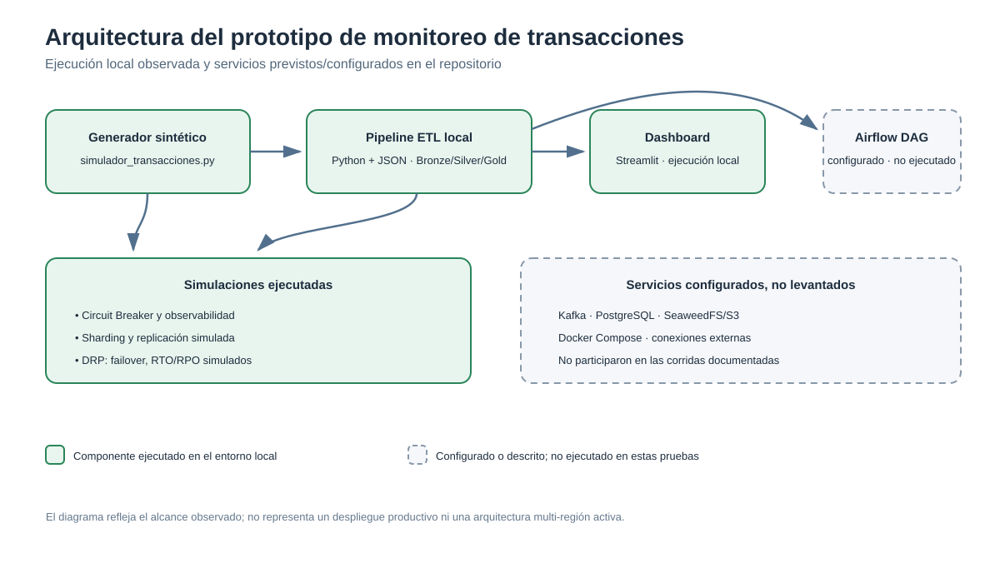
Figura 1. Componentes ejecutados localmente y servicios configurados pero no levantados en las pruebas; las flechas no implican integración productiva.
El entorno reportado fue Linux, Python 3.12.3 y un entorno virtual
.venv. Se instaló el grupo base de dependencias desde pip,
incluidos pandas, kafka-python, boto3, psycopg2-binary, SQLAlchemy,
Streamlit, Plotly, python-dotenv, Pydantic, Tenacity, Rich, pytest y
Faker. La instalación terminó con
Successfully installed.
La ejecución local de python demo.py no requirió Docker.
La primera revisión del inventario Docker mostró que el equipo no tenía
imágenes ni contenedores del proyecto en ejecución. No se debe confundir
la disponibilidad de docker-compose.yml con la ejecución
del stack.
Se siguió el procedimiento manual del README: crear un entorno
virtual, activarlo e instalar dependencias base. Se ejecutó la demo
desde ese entorno y luego se abrió el dashboard con
streamlit run dashboard/app_streamlit.py. El dashboard
estuvo accesible en http://localhost:8501 según la captura
de arranque.
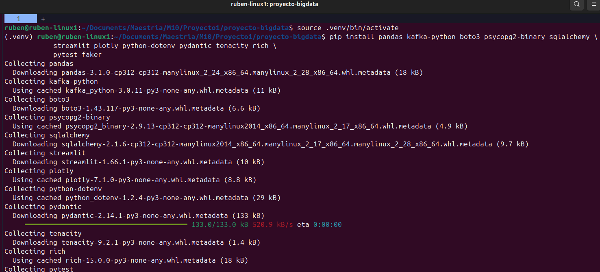
Figura 2. Instalación del entorno Python mostrada en terminal.
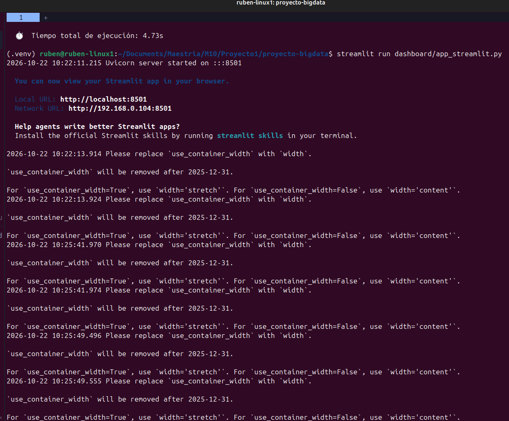
Figura 3. Arranque del dashboard Streamlit y URL local.
La demo incluye cinco bloques y una síntesis final. Una ejecución
completa desde .venv terminó en 4,73 segundos, de acuerdo
con la salida compartida. Los resultados internos varían, por lo que el
tiempo no constituye un benchmark y los porcentajes de fraude o métricas
de rendimiento no son valores fijos.
El generador creó transacciones con id_transaccion,
timestamp_utc, región, identificador de cliente, tipo,
monto, moneda, canal, indicadores de fraude y metadatos
semiestructurados. El ETL local ejecutó tres pasos:
En una ejecución de la demo con 300 registros, Silver/Gold reportó 300 transacciones y un monto total de USD 850.491,00. En otra corrida compartida con el motor batch, de 500 entradas quedaron 497 válidas y 3 rechazadas; después de la corrección UTC, una nueva corrida tuvo 500 entradas, 499 válidas y 1 rechazada. Son lotes aleatorios independientes, no una discrepancia del mismo lote.
La Figura 27 resume el recorrido de los datos por Bronze, Silver y Gold, incluida la salida de registros rechazados.
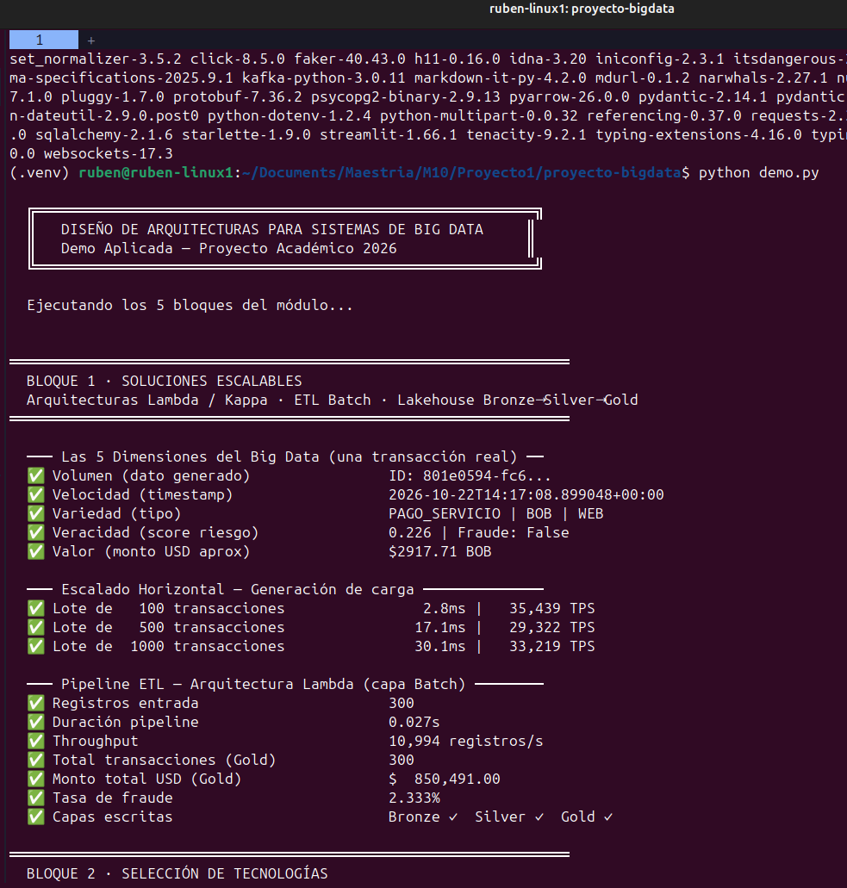
Figura 4. Datos sintéticos y resultado de las capas Bronze, Silver y Gold en la demo.
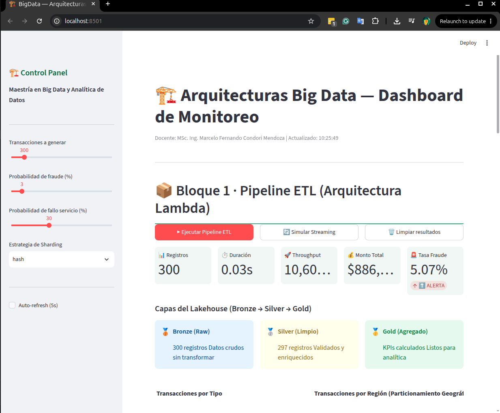
Figura 5. Indicadores y presentación del pipeline ETL en el dashboard.
La demo presenta una tabla conceptual de batch y streaming, y compara Data Lake, Data Warehouse y Lakehouse. Los rótulos Spark y Kafka/Flink son parte de una ilustración de latencia generada localmente; no se conectaron a motores reales para esa medición. En el informe final, debe presentarse como comparación didáctica y no como resultado de benchmark.
La demo simula una dependencia inestable, registra llamadas, errores y rechazos cuando el circuito se encuentra abierto, espera un timeout y luego permite una llamada de prueba. En la ejecución individual reportada, el umbral fue de 3 fallos y el timeout de 5 segundos; hubo 15 intentos, 1 éxito, 4 fallos registrados y 10 rechazos mientras el circuito estuvo abierto. La secuencia depende de la aleatoriedad.
La misma área del proyecto genera métricas y trazas de observabilidad. En otra corrida del módulo de observabilidad hubo 6 errores sobre 94 mensajes, tasa de 6,38 %, y se activó una alerta crítica con umbral del 5 %. Las cifras pertenecen a ejecuciones distintas y se citan para explicar funcionalidades, no para comparar tasa del sistema.
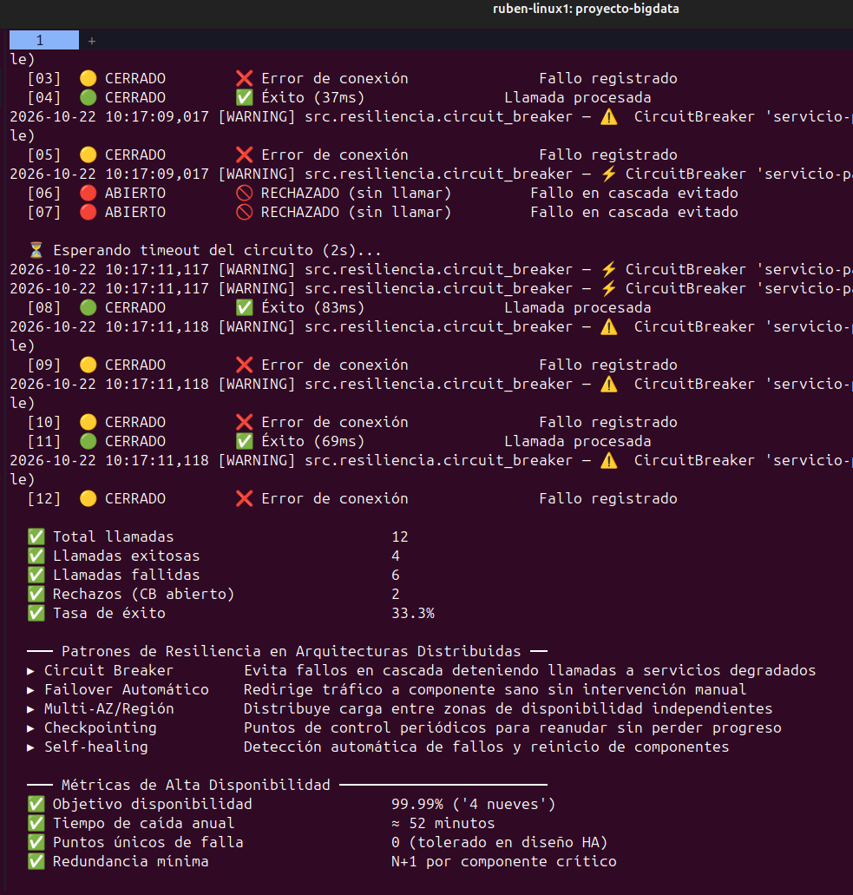
Figura 6. Circuito y métricas de alta disponibilidad presentados en la demo.
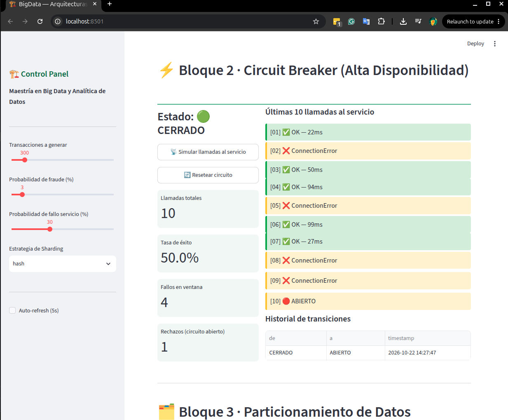
Figura 7. Estado y últimas llamadas mostradas en el panel interactivo.
El módulo registra datos en el sitio primario, inicia un hilo de replicación al standby y simula la caída del sitio primario. El failover simulado activa el sitio standby, espera 0,5 segundos, informa la redirección y calcula registros disponibles, RTO y RPO. El simulacro guarda y restaura el estado previo para que la aplicación de prueba no permanezca en failover después del ensayo.
La primera corrida de 200 registros replicó solo los últimos 100, por lo que reportó 100 disponibles y 100 posiblemente perdidos. A la vez el RPO calculado por tiempo desde el último backup fue 0,03 min y se marcó cumplido frente al objetivo de 5 min. Este resultado mostró que el contador de registros omitidos y el cálculo temporal del RPO son dimensiones diferentes y que la inicialización de la réplica estaba incompleta.
Después de cambiar el ciclo para copiar todos los registros
pendientes, el ensayo compartido reportó 200 disponibles, 0 posiblemente
perdidos, RTO de 0,01 min y RPO de 0,03 min. No hubo brechas. Al
terminar, el estado general volvió a region-a-activa; el
resultado del failover dentro del simulacro identificó
region-b-standby como sitio activo durante la prueba. Las
métricas se producen con esperas y reloj local, por lo que no
representan objetivos SLA validados en infraestructura real.
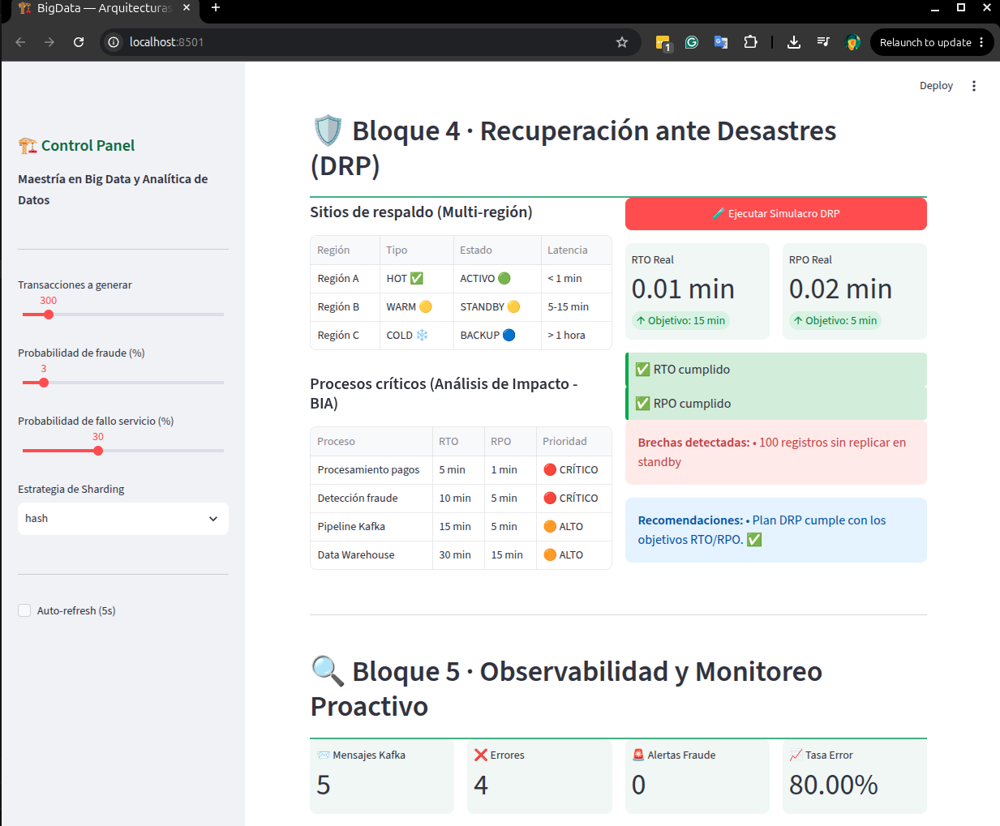
Figura 8. Resultado inicial del simulacro mostrado en la interfaz.
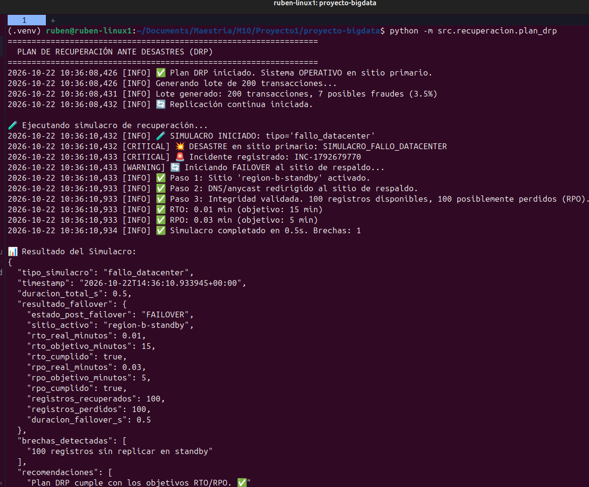
Figura 9. Línea base: 100 de 200 registros no estaban en standby.
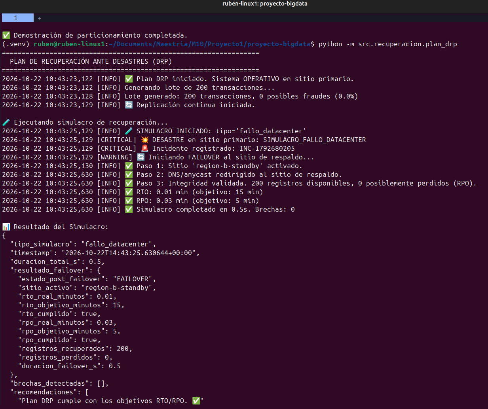
Figura 10. Después del cambio: los 200 registros se encontraron en standby y no se reportaron brechas.
El módulo genera 600 transacciones, inserta lotes en la estrategia
hash y geográfica, muestra una separación vertical por
perfil/transacción/comercio/riesgo y compara estrategias de replicación.
En la corrida inicial del usuario, el hash asignó 167 registros a
shard_0, 333 a shard_1 y ninguno a
shard_2; el balance fue 0 % y se marcó hotspot. La causa
fue el uso preferente de shard_key, con únicamente
etiquetas shard_0–shard_2, como entrada a una
segunda distribución por anillo.
Después de priorizar cliente_id, una corrida de 500
transacciones distribuyó 155, 169 y 176 registros entre los tres shards.
La métrica de balance del módulo quedó en 88,1 % y no detectó hotspot.
La comparación se representa en la Figura 30. Una corrida de 500 filas
es ilustrativa; no demuestra por sí sola balance esperado en todas las
cargas ni bajo distribuciones adversas.
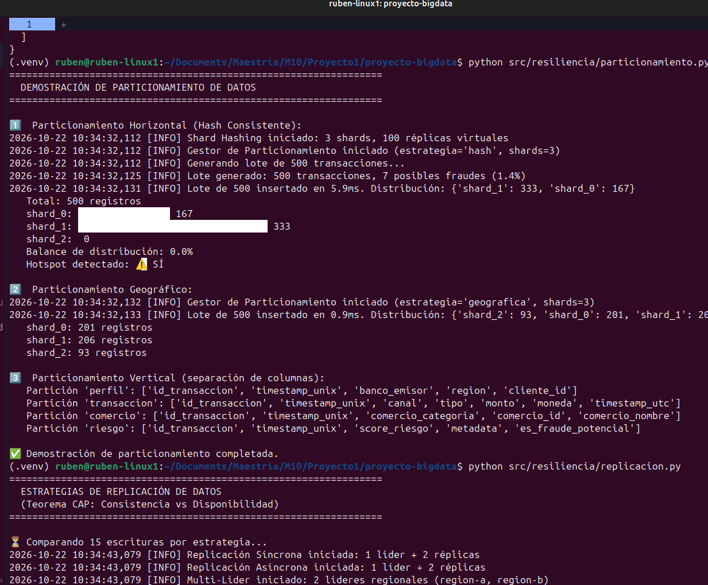
Figura 11. Línea base con el shard 2 sin registros.
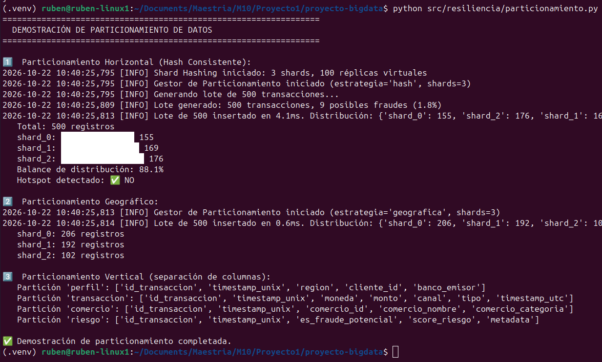
Figura 12. Resultado posterior con uso de los tres shards y balance de 88,1 %.
En una ejecución individual, la comparación de escrituras mostró aproximadamente 21,7 ms de latencia media síncrona, 1,5 ms asíncrona y 5,3 ms multi-líder. Estas cifras proceden de sleeps y variaciones aleatorias, no de nodos de red reales. La principal utilidad de la tabla es hacer visible el compromiso pedagógico entre espera por confirmaciones y propagación posterior.
Se ejecutaron de forma independiente el simulador, el Circuit
Breaker, el particionador, el simulador de replicación, el motor batch,
la observabilidad y el DRP. El intento
python src/recuperacion/plan_drp.py falló con
ModuleNotFoundError: No module named 'src', debido a la
ruta de importación para ejecución directa. Ejecutarlo desde la raíz
como python -m src.recuperacion.plan_drp resolvió la
importación. Por este motivo se actualizó el README.
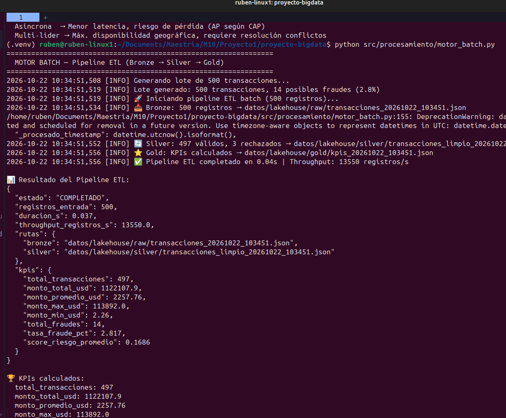
Figura 13. Ejecución individual del motor batch antes de corregir la marca temporal obsoleta.
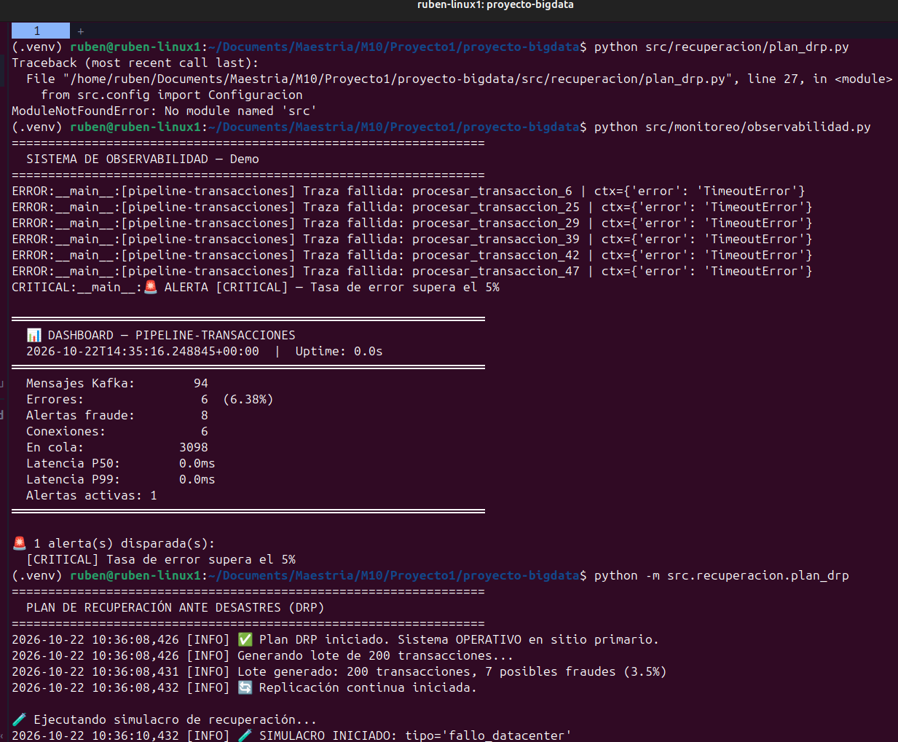
Figura 14. Salida que permite distinguir el error de invocación directa del resultado del módulo de observabilidad.
Se recibió una captura auténtica de la terminal integrada de VS Code.
En ella se observa un primer intento del motor batch que falló por
timezone no importado y, después del ajuste, la ejecución
que completó las tres capas. Esta evidencia documenta el proceso
completo de corrección, incluido el error intermedio, y demuestra que el
proyecto se ejecutó desde VS Code.
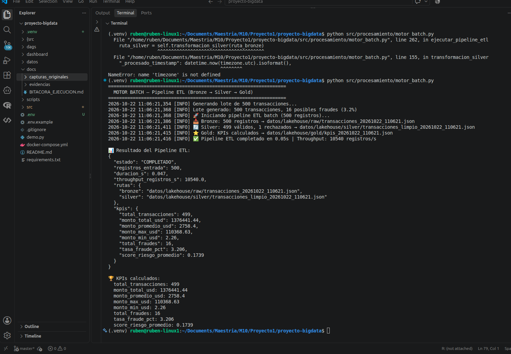
Figura 15. Captura en VS Code: error inicial durante la corrección y ejecución posterior exitosa del ETL, con 500 entradas, 499 válidas y 1 rechazada.
Para reducir el riesgo de reintroducir los defectos corregidos se incorporaron tres pruebas automatizadas. Estas comprueban que la latencia simulada no sea negativa, que una muestra de 500 clientes use los tres shards y que el DRP replique el lote inicial completo y solo los nuevos registros en las sincronizaciones posteriores.
El usuario ejecutó
python -m pytest tests/test_mejoras_aplicadas.py -v desde
el entorno .venv de Python 3.12.3. La salida mostró tres
casos aprobados en 0,16 segundos. La prueba DRP sustituye la espera
simulada de sincronización por una función local para medir la lógica de
copia sin introducir latencia artificial. Estos casos cubren escenarios
concretos; no sustituyen pruebas de integración con Kafka, Docker ni un
entorno distribuido.
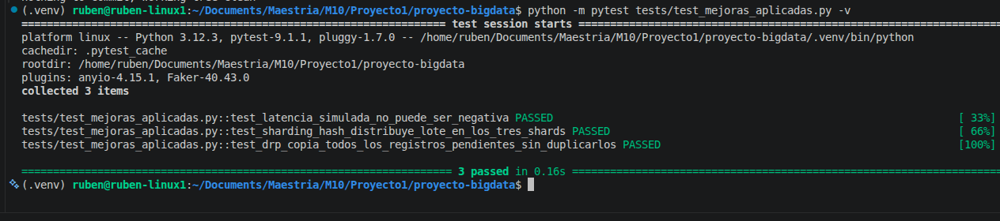
Figura 16. Terminal integrada de VS Code: las tres pruebas de regresión pasaron en 0,16 segundos.
Después de incorporar la extracción de la sincronización DRP y las
pruebas de regresión, el usuario volvió a ejecutar
python demo.py desde VS Code. La demo finalizó en 4,69
segundos. En el bloque ETL de esa corrida ingresaron 300 registros y
Gold presentó 294; en el simulacro se recuperaron 150 registros, no se
reportaron pérdidas, y el hash distribuyó 600 registros en 183/211/206,
con balance reportado de 86,7 % y sin hotspot. Las comparaciones de
tecnología y resiliencia de la demo son ilustrativas; no se midieron
motores ni centros de datos externos.
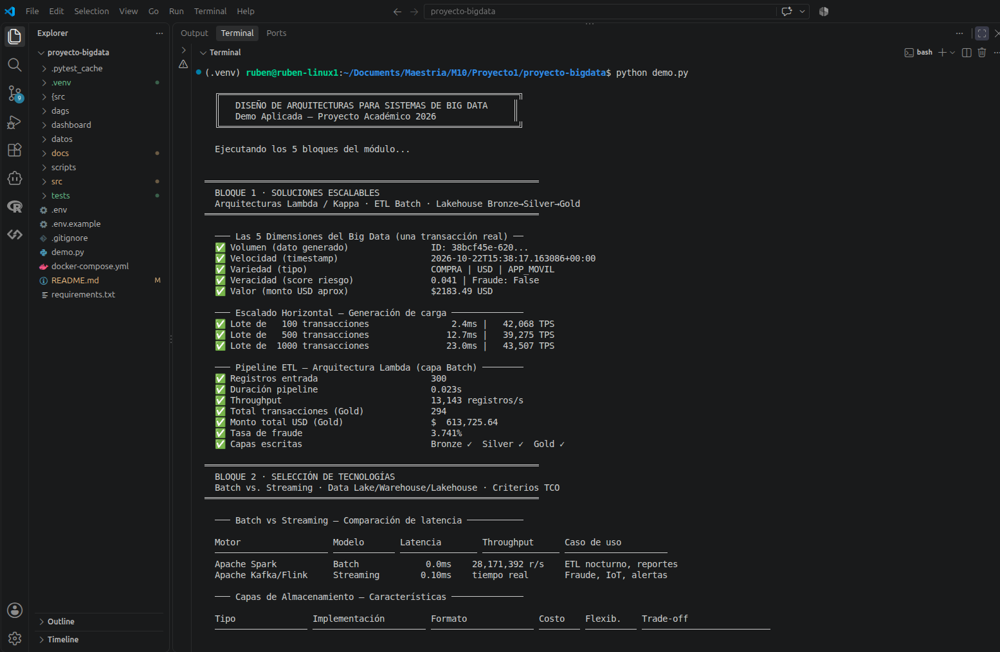
Figura 17. Datos sintéticos, escalado por lotes y ETL del bloque 1; comienza la comparación del bloque 2.
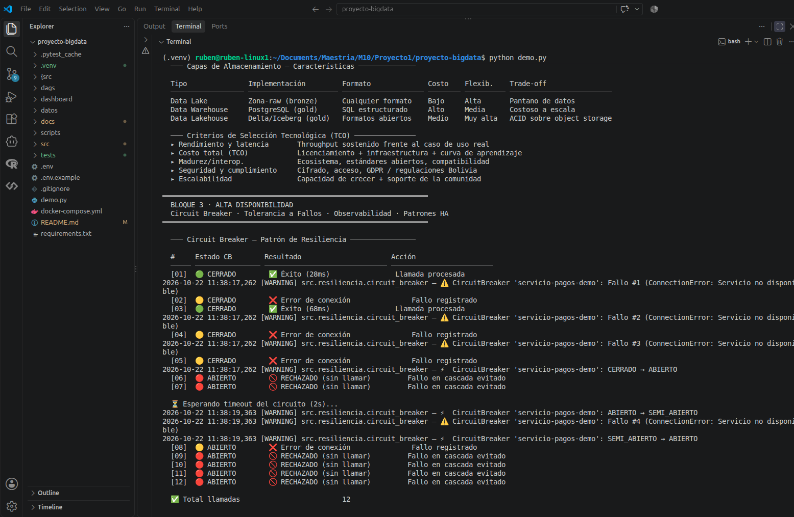
Figura 18. Criterios de selección y secuencia de llamadas que lleva al Circuit Breaker a rechazar operaciones.
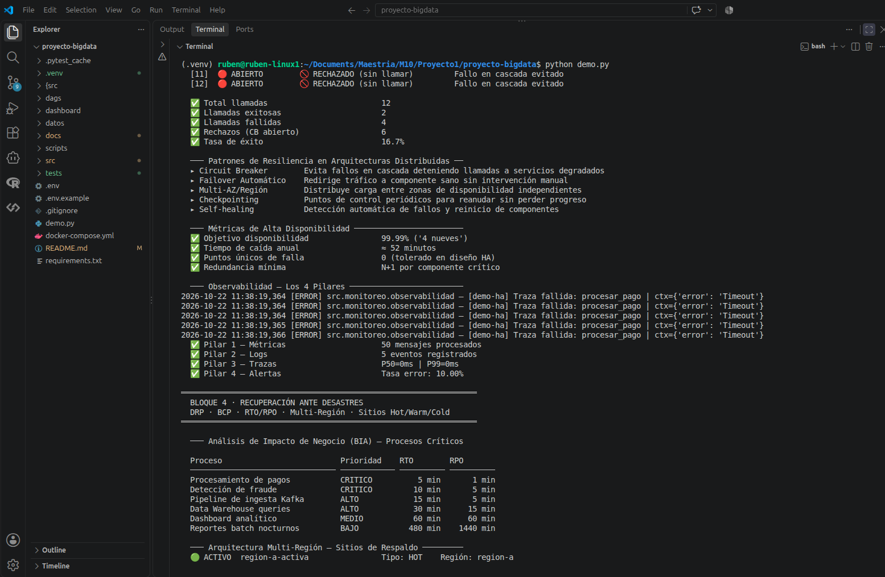
Figura 19. Métricas de disponibilidad y observabilidad; inicio de la sección de recuperación ante desastres.
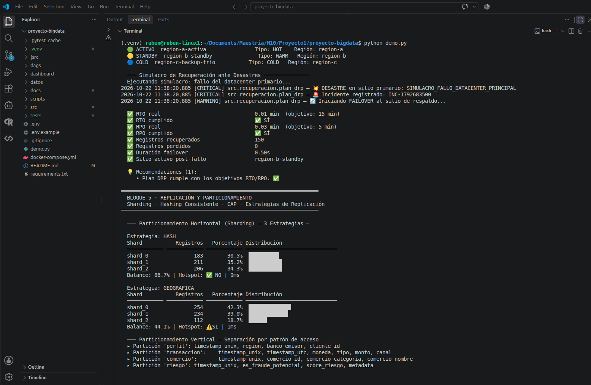
Figura 20. Simulacro DRP con 150 recuperados y cero registros perdidos; transición al bloque de particionamiento.
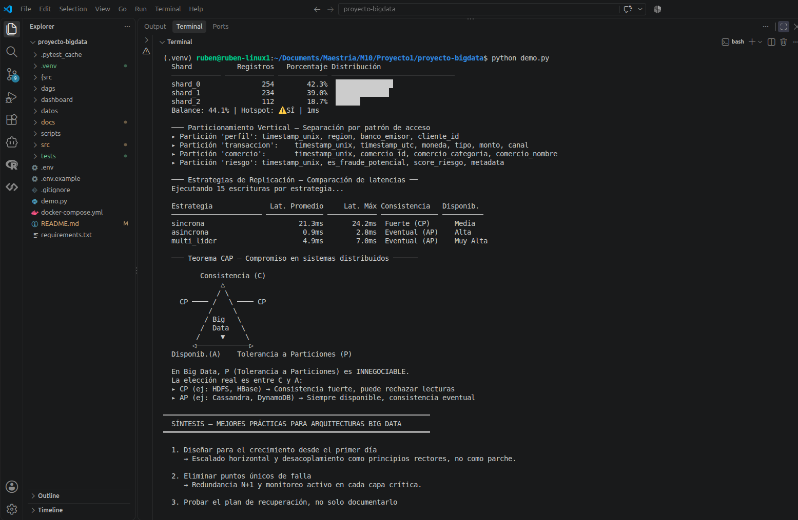
Figura 21. Resultados de hash, replicación síncrona/asíncrona/multi-líder y explicación conceptual de CAP.
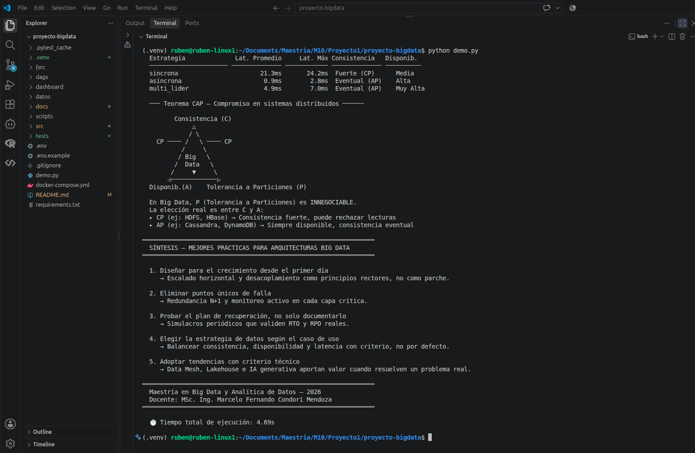
Figura 22. Recomendaciones presentadas por la demo y duración total de 4,69 segundos.
Además de la demo integral, el usuario ejecutó módulos individuales. En el sharding hash de una muestra de 500 registros se observaron 150, 189 y 161 registros por shard, con balance de 79,4 % y sin hotspot. En otra corrida del DRP, 200 de 200 registros estaban disponibles en standby, con cero pérdidas; se informaron RTO de 0,01 min y RPO de 0,03 min. El motor ETL procesó 500 entradas, conservó 494, rechazó 6 y calculó un throughput de 12.043 registros/s. La observabilidad procesó 98 mensajes, registró 2 errores (2,04 %), 8 alertas de fraude y ninguna alerta activa. Son resultados de corridas separadas y, excepto la cifra de entrada configurada, pueden variar.
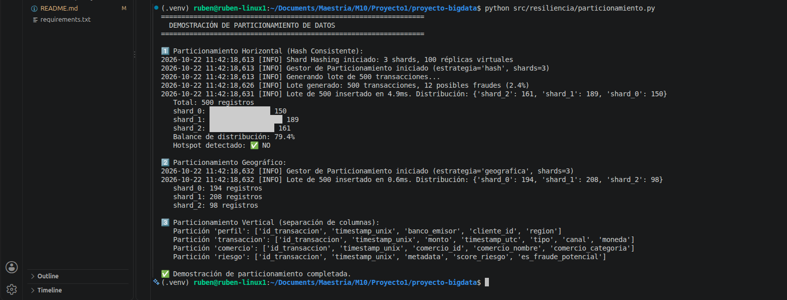
Figura 23. Ejecución individual: tres shards poblados, balance de 79,4 % y ausencia de hotspot en la muestra.
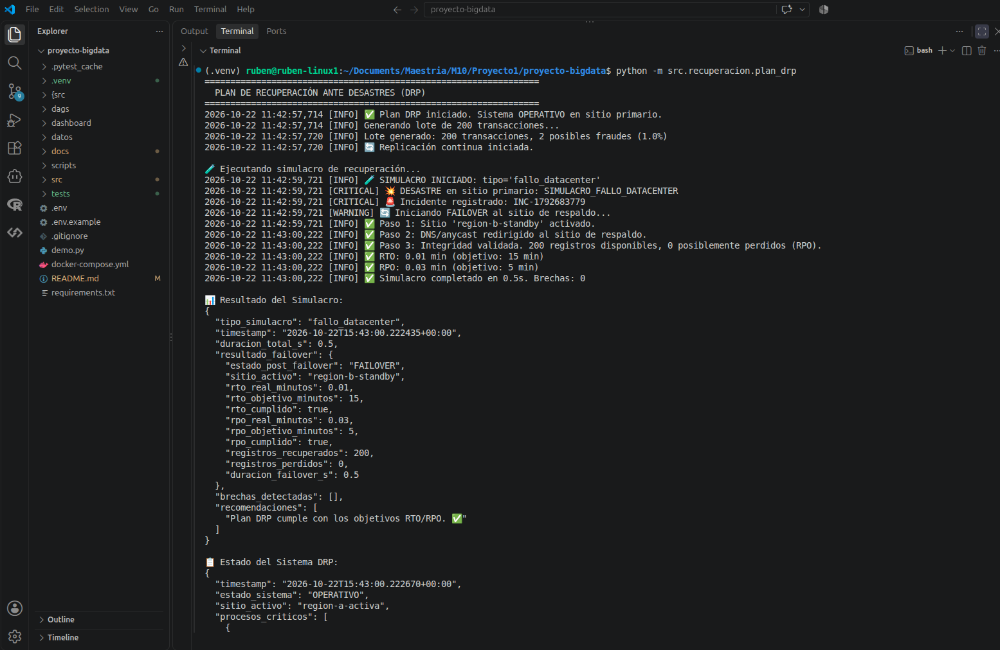
Figura 24. Simulacro individual con 200 registros recuperados, cero perdidos y objetivos temporales RTO/RPO cumplidos.
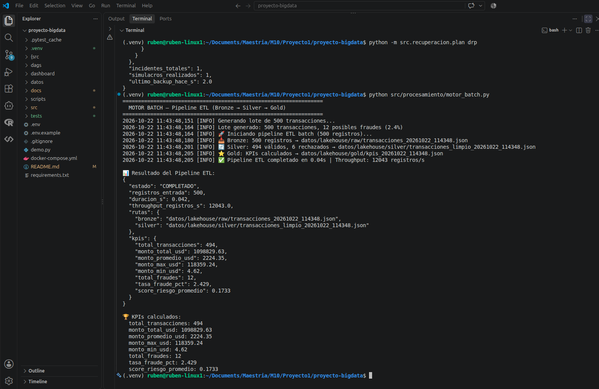
Figura 25. Resultado individual Bronze/Silver/Gold con 500 entradas, 494 registros Silver y 6 rechazados.
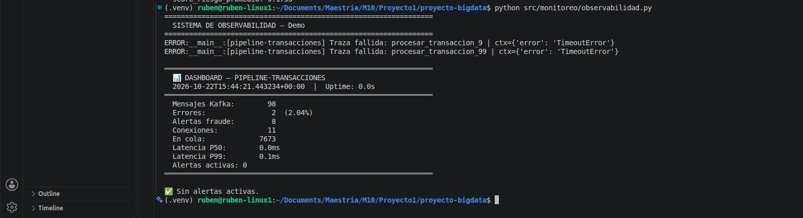
Figura 26. Métricas de 98 mensajes, dos errores, ocho alertas de fraude y cero alertas activas en esta corrida.
El esquema de la Figura 1 distingue el camino local que sí se ejecutó de los servicios Docker descritos en la configuración. La Figura 27 amplía la transformación por capas, incluyendo la salida de registros rechazados. La Figura 28 muestra las etapas del simulacro DRP y que, al finalizar, el prototipo restaura el estado previo. La Figura 29 resume los estados del Circuit Breaker. La Figura 30 ofrece una comparación visual de la distribución hash de línea base y de la corrida posterior a la mejora. En todas las figuras, los elementos locales representan el comportamiento observado; no se atribuye operación a infraestructura que no se levantó.
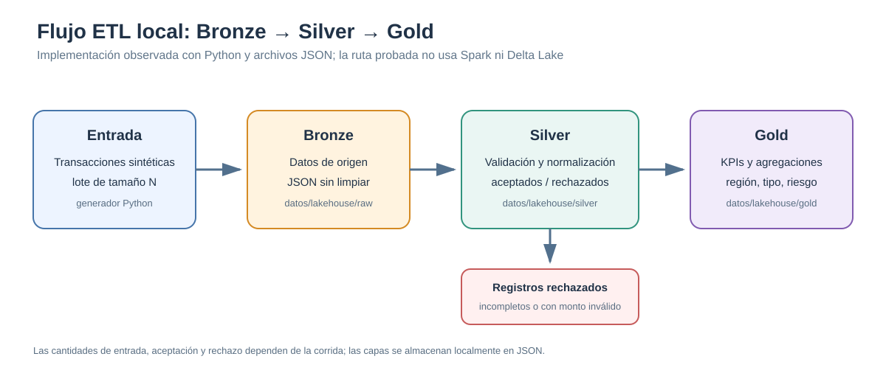
Figura 27. Proceso Bronze → Silver → Gold con ramificación de registros rechazados.
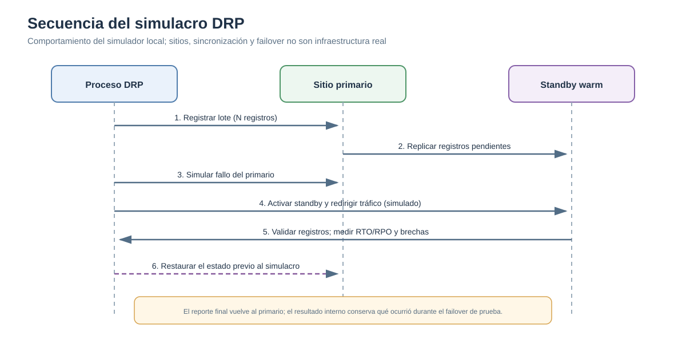
Figura 28. Registro, sincronización, fallo, failover, validación y restauración del estado de la aplicación de prueba.
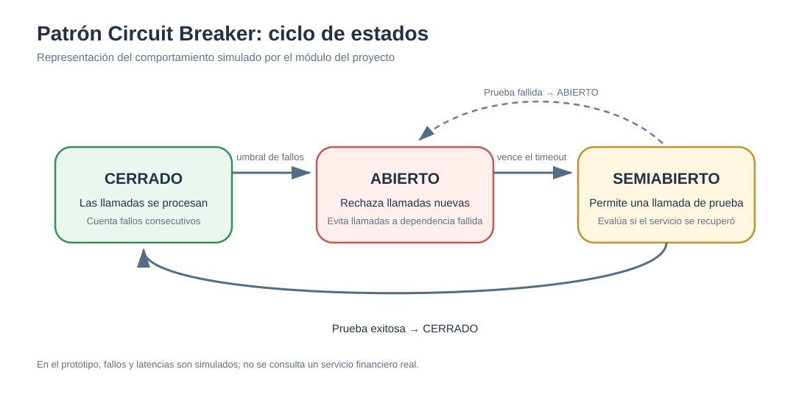
Figura 29. Transiciones entre cerrado, abierto y semiabierto ante fallos, timeout y llamada de prueba.
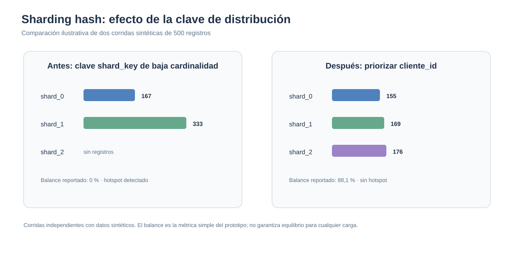
Figura 30. Distribución observada en dos corridas sintéticas de 500 registros; los valores son ilustrativos, no una garantía estadística.
| N.º | Archivo | Hallazgo | Cambio | Evidencia de resultado |
|---|---|---|---|---|
| 1 | src/resiliencia/replicacion.py |
Una latencia base de 1 ms más ruido aleatorio de −2 a 2 ms podía
producir un valor negativo y detener time.sleep(). |
Se limitó la latencia simulada con max(0.0, ...). |
Bloque 5 y demo integral concluyeron después del cambio; la demo compartida terminó en 4,75 s y luego 4,73 s. |
| 2 | src/resiliencia/particionamiento.py |
Se volvía a hashear una clave con solo tres etiquetas, dejando un shard vacío. | Se priorizó cliente_id, de mayor cardinalidad en los
datos generados. |
En 500 registros: de 167/333/0 a 155/169/176; balance reportado 88,1 %. |
| 3 | src/recuperacion/plan_drp.py |
El ciclo copiaba únicamente los últimos 100 registros al standby. | Se copiaron los registros posteriores al conteo ya sincronizado. | En una muestra de 200: de 100 recuperados/100 perdidos a 200/0 y cero brechas. |
| 4 | src/procesamiento/motor_batch.py y
README.md |
datetime.utcnow() generaba advertencia de
obsolescencia; la instrucción directa del DRP no resolvía
src. |
Se usó datetime.now(timezone.utc) y se cambió el
comando del README a
python -m src.recuperacion.plan_drp. |
El ETL completó en 0,047 s, sin advertencia, con 500 entradas y 499 válidas. |
| 5 | src/recuperacion/plan_drp.py,
tests/test_mejoras_aplicadas.py y
README.md |
El repositorio documentaba comandos de pytest, pero no tenía una carpeta de pruebas; la sincronización DRP estaba integrada dentro del hilo y era difícil de comprobar aisladamente. | Se extrajo _replicar_pendientes() y se añadieron
pruebas de regresión para latencia no negativa, uso de los tres shards y
sincronización DRP incremental sin duplicados. Se actualizó el comando
de pytest del README. |
El usuario ejecutó
python -m pytest tests/test_mejoras_aplicadas.py -v: 3
pruebas pasaron en 0,16 s; la captura de VS Code quedó archivada como
evidencia 27. |
Las mejoras de latencia, sharding y DRP, la corrección UTC, las
pruebas de regresión y los diagramas se guardaron en commits del
repositorio, incluido d72ace5. Las tres pruebas de
regresión pasaron en la ejecución informada por el usuario. Para el
cumplimiento estricto del requisito docente aún se requieren tres
capturas únicas adicionales desde VS Code.
.venv permitió
correr la demo, el dashboard y los módulos locales sin iniciar Docker.
Esto facilitó revisar la lógica de simulación, pero no valida la
operación de los servicios distribuidos anunciados en la arquitectura
general.datetime.utcnow() eliminó la advertencia de
obsolescencia en la corrida ETL, y actualizar la instrucción del README
permitió ejecutar el DRP como módulo desde la raíz..env ni valores reales de
contraseñas en el ZIP.docker-compose.yml antes de presentar
propiedades de alta disponibilidad: la configuración inspeccionada usa
un broker Kafka y factor de replicación 1; sus comentarios no bastan
para demostrar tolerancia a fallos..docx con estilos de títulos,
índice automático, pies de figura, numeración de páginas y al menos 14
páginas; después revisar el documento exportado visualmente. Comprimir
por separado el proyecto actualizado, excluyendo .venv,
.env, cachés y archivos temporales.[1] Lin, J. (2017). The Lambda and the Kappa. IEEE Internet Computing, 21(5), 60–66. https://cs.uwaterloo.ca/~jimmylin/publications/Lin_IEEE2017b.pdf
[2] Databricks. (s. f.). What is the medallion lakehouse architecture? https://docs.databricks.com/gcp/en/lakehouse/medallion
[3] Gilbert, S., & Lynch, N. A. (2012). Perspectives on the CAP Theorem. Computer, 45(2), 30–36. https://doi.org/10.1109/MC.2011.389
[4] Fowler, M. (2014, 6 de marzo). Circuit Breaker. https://martinfowler.com/bliki/CircuitBreaker.html
[5] Swanson, M., Bowen, P., Phillips, A., Gallup, D., & Lynes, D. (2010). Contingency Planning Guide for Federal Information Systems (NIST SP 800-34 Rev. 1). National Institute of Standards and Technology. https://doi.org/10.6028/NIST.SP.800-34r1
[6] Python Software Foundation. (s. f.). datetime — Basic date and time types. Python 3 documentation. https://docs.python.org/3/library/datetime.html
# Activar entorno
source .venv/bin/activate
# Ejecutar demo completa o un bloque
python demo.py
python demo.py --bloque 1
python demo.py --bloque 5
# Abrir dashboard
streamlit run dashboard/app_streamlit.py
# Ejecutar módulos individuales desde la raíz
python src/ingesta/simulador_transacciones.py
python src/resiliencia/circuit_breaker.py
python src/resiliencia/particionamiento.py
python src/resiliencia/replicacion.py
python src/procesamiento/motor_batch.py
python -m src.recuperacion.plan_drp
python src/monitoreo/observabilidad.pyEl catálogo con 37 capturas, su descripción y notas de línea
base/posterior se encuentra en evidencias/INDICE_EVIDENCIAS.md.
Para el Word, seleccionar figuras variadas y legibles, mantener las
capturas originales y añadir pies que indiquen el comando y el hallazgo
que se observa.